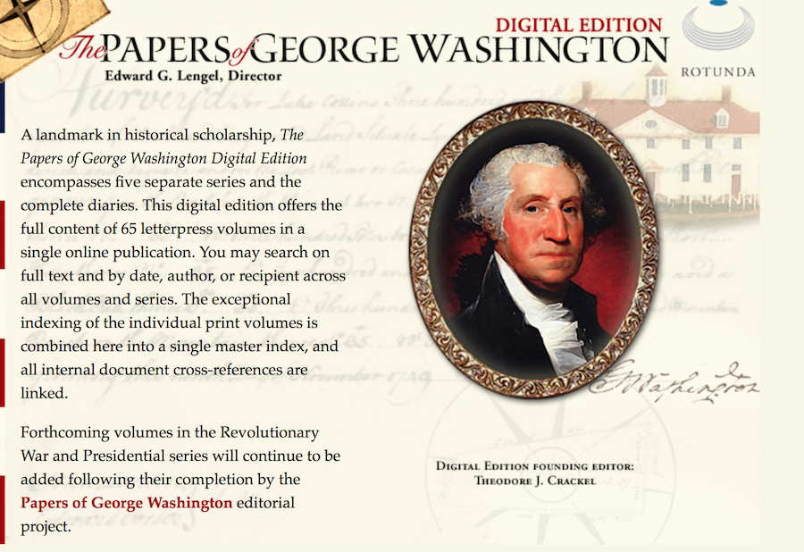

-
Digital Humanist, Drupal Developer, and Information Technologist
This is my personal site discussing my background, goals, and experience. It is a work in progress, as I am continuing to update it.
-
Digital Projects I've Worked On/Contributed To:
George Washington Financial Papers Project
Description to come.
Rotunda
Description to come.
The Dolley Madison Digital Edition
The Dolley Madison Digital Edition is a born digital edition of Dolley Madison's papers. Focusing primarily on her correspondence, the project aims to accurately transcribe and annotate her documents to provide detailed historical context into her life. The project uses a FileMaker database where the entire process is done, including the TEI markup. During my time with the project I participated in all aspects of the documentary editing process.
George Washington Digital Edition
 Description to come.
-
Educational Background, Skills, Work Experience, and more
Education:
BA, History and Art History - University of Virginia
Masters in Library and Information Science - University of Wisconsin, Milwaukee
Additional Certificates:
Web Basic Certification - University of Virginia
Web Design Certification - University of Virginia
Creating LAMP Infrastructure for Digital Humanities Projects - Digital Humanities Summer Institute (DHSI)
Digital Public Humanities, Graduate Certificate - George Mason University (currently in progress)
Various certificated from Lynda.comSkills:
Drupal, Wordpress, CSS, HTML, Adobe Programs (Fireworks, Dreamweaver, Illustrator, Captivate 9, and Photoshop), FileMaker, Oxygen (XML), some PHP and Javascript
Work and Teaching Experience:
Digital Humanities Summer Institute (DHSI) 2016, Conceptualizing and Creating a Digital Edition (Co-teacher)
Washington Papers, Research Editor
University of Virginia Press - Rotunda, Editorial Assistant
Dolley Madison Digital Edition, Assistant Editor
***Upcoming: Digital Humanities Summer Institute (DHSI) 2017, Drupal for Digital Humanities ProjectsVolunteer:
Association for Documentary Editing (ADE), Webmaster
Digital Humanities Now, Editor at Large
dh+lib, Editor at Large
Presentations:
"The Washington Papers: Refashioning Documentary Editing for the Future: Creativity, Collaboration, Expansion”, Presentation Panel, ADE 2015
"George Washington Financial Papers: Documents & Data", Co-presenter, MEDEA 2015
"George Washington Financial Papers: Progress, Context, and Future Work", Co-presenter, Mount Vernon 2016
"George Washington Financial Papers Project: Building Content-Specific Taxonomies and System Specifications", Co-presenter, MEDEA 2016
-
Interested in collaborating? Need Help With a Project? Let me know!
Email: efc8d@virginia.edu
Twitter: @ecava12Projects using open source software and those looking to make their tools and methodologies available for public use are of great interest to me. I enjoy working on creative and innovative projects and enjoy challenging work. Please feel free to reach out if you would like to collaborate on a project!